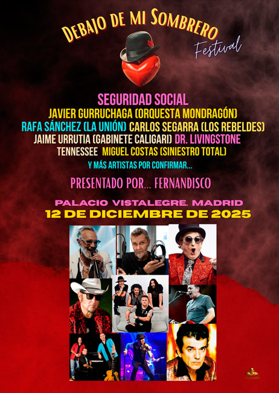
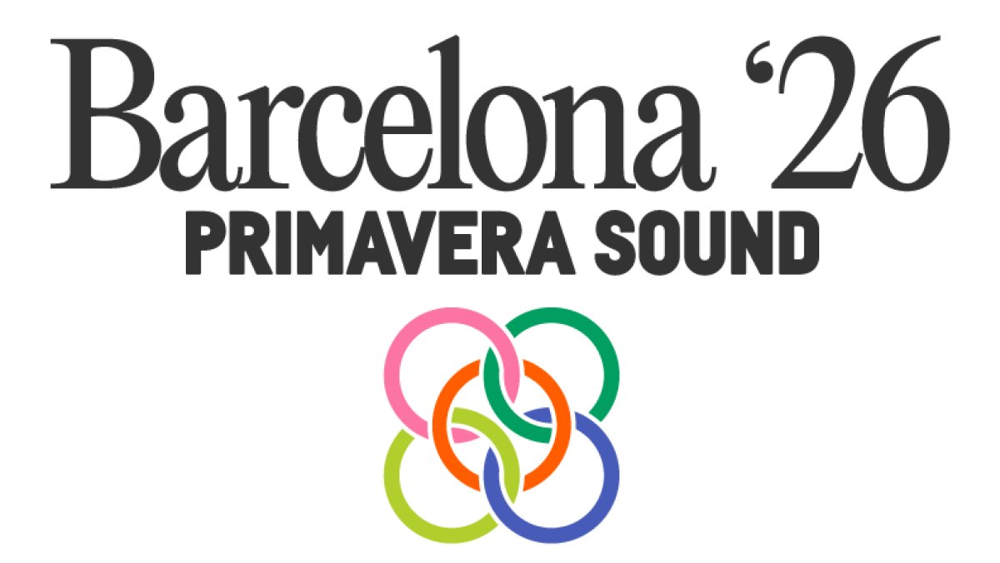

Debajo de mi Sombrero
Palacio Vistalegre Madrid · 12 de Diciembre de 2025

Sobre el escenario, un cartel de lujo con algunas de las voces más icónicas del pop nacional. Himnos generacionales, energía en estado puro. Una noche pensada para cantar, bailar, emocionarse y celebrar. Los artistas más grandes de la Edad de Oro del Pop Español juntos en un evento que promete recrear la banda sonora de tu vida.
Ver más
Primavera Sound
Barcelona · 4-6 de Junio de 2026

Ya tenemos cartel para la 23a edición del Primavera Sound, que se celebra del 4 al 6 de junio de 2026 en el Parc del Fòrum. En esta ocasión el programa está encabezado por The Cure, Doja Cat, The xx, Gorillaz, Massive Attack, Addison Rae y My Bloody Valentine. Pero, claro, hay mucho más. Entre los casi 150 artistas confirmados están Mac DeMarco, Pinkpantheress, Skrillex, Peggy Gou, Lola Young, Father John Misty, Ethel Cain, Bad Gyal, Big Thief, Wet Leg, Little Simz, Slowdive, Kneecap, Alex G, Dijon y Blood Orange, entre muchos otros. ¡Ahí estaremos!
Ver más